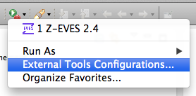
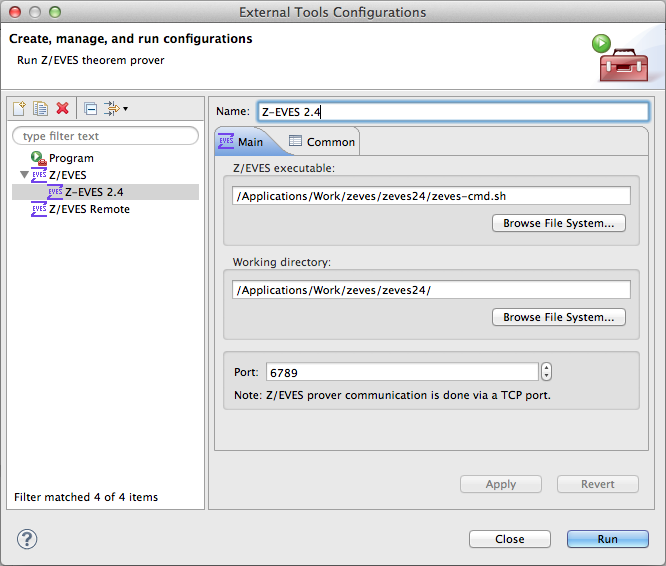
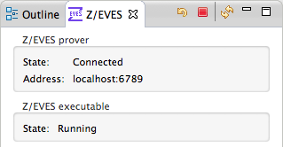

Launching Z/EVES
Community Z Tools provides a prover IDE to use with Z/EVES theorem prover. To start proving, you need to select and launch a Z/EVES application. CZT allows multiple such launch configurations to be set up.
The launch configurations can be managed by selecting Run > External Tools > External Tools Configurations… or the corresponding toolbar drop-down button :

Note: the toolbar and menu items afterwards allow quickly launching the last Z/EVES configuration again.
Select Z/EVES application
When configuring Z/EVES to launch, you need to indicate where the Z/EVES executable is located and its working directory. When launched, Z/EVES prover will be started and linked with CZT IDE.

- Select Z/EVES launch type on the left of the dialog.
- Either double-click the selected type or use New button to create a new launch configuration (screenshot above).
-
Select Z/EVES executable in the first field:
- Windows: Use <zeves>/system/z-eves-pc-windows-lispworks.exe
- Linux: Use <zeves>/system/z-eves.sh or equivalent
- Mac OS X: Use some script that starts Wine with the Windows version of Z/EVES
- Select Working directory to point to Z/EVES installation directory.
- (Optional) You can also change a communications port to use with the Z/EVES prover in Port, e.g. if it clashes with some other application.
- Click Run to launch Z/EVES process.
Launch Z/EVES
The launch progress is displayed in the bottom-right corner. You can verify whether Z/EVES has been launched successfully in the Z/EVES view (refresh  it if needed).
it if needed).

If the connection to Z/EVES fails, a dialog will open with notification. Note that it may take some time to start Z/EVES on Mac OS X, so you can choose to Retry there.